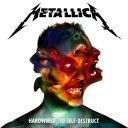
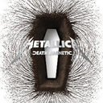
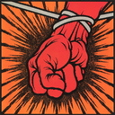
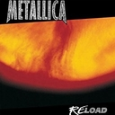
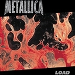
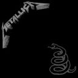
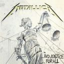
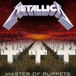
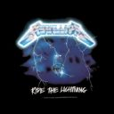
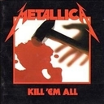

Discografía
-
 Hardwired to Selfdestruct, 2017
Canciones -
 Death Magnetic, 2008
Canciones -
 St. Anger, 2003
Canciones -
 ReLoad, 1997
Canciones -
 Load, 1996
Canciones -
 Metallica, 1991
Canciones -
 ...And Justice For All, 1988
Canciones -
 Master of Puppets, 1986
Canciones -
 Ride the Lightning, 1984
Canciones -
 Kill 'em All, 1983
Canciones
Sobre la discografía de Metallica
La discografía de Metallica consiste en diez álbumes de estudio, cinco en directo, cinco EP y numerosos sencillos y videoclips. Después de varios cambios de bajista y guitarrista, la banda contrató a Cliff Burton y Kirk Hammett, respectivamente. Metallica comenzó a realizar conciertos a nivel local, tras la publicación de su primera demo de gran distribución, No Life 'til Leather, en 1982. La demo llamó la atención de Johny Zazula, quien ofreció a la banda un contrato con Megaforce Records. La banda publicó Kill 'Em All en 1983, al que siguió la publicación de Ride the Lightning al año siguiente. Tras el lanzamiento de Ride the Lightning, Metallica dejó Megaforce y firmaron un contrato con Elektra Records. En marzo de 1986 la banda publicó su tercer álbum de estudio, Master of Puppets, que fue el primer álbum de Metallica en conseguir la certificación de disco de oro por la Recording Industry Association of America (RIAA). Mientras realizaban la gira promocional del álbum, Burton falleció en un accidente en el autobús de la banda. Jason Newsted fue contratado para remplazarle y su primera grabación con Metallica fue un EP de versiones de otros artistas. ...And Justice for All fue publicado en agosto de 1988 y alcanzó la sexta posición en el Billboard 200.
El quinto álbum de Metallica, titulado de manera homónima, fue publicado en 1991 y debutó en la primera posición del Billboard 200. La banda se embarcó en una gira de dos años para promocionar el álbum. Tras su publicación, Metallica ha sido certificado quince veces como disco de platino por la RIAA. En 1996 Metallica escribió suficiente material para un álbum doble, pero los publicaron como dos álbumes separados, titulados Load y ReLoad. Después de haber puesto a la venta un álbum de versiones y uno en directo, Newsted abandonó la agrupación. Metallica grabó St. Anger (2003) sin un bajista oficial (las pistas de bajo fueron compuestas y grabadas por el productor de la banda Bob Rock). Robert Trujillo fue contratado como nuevo bajista de Metallica tras la publicación del álbum. La banda publicó su noveno álbum de estudio, Death Magnetic (2008) con el productor Rick Rubin. En 2011, fue editado Lulu, una colaboración entre Metallica y Lou Reed, que tuvo una pésima acogida por parte del público y alcanzó la posición treinta y seis en el Billboard 200, el puesto más bajo para un álbum de Metallica desde Ride the Lightning (1984). Aunque, el álbum fue una colaboración. En noviembre de 2016 se publicó su más reciente disco de estudio, "Hardwired... to Self-Destruct".
Metallica han vendido más de cien millones de discos en todo el mundo, con más de sesenta millones vendidos en Estados Unidos; también es la única banda en la historia en alcanzar la primera posición en el Billboard 200 con seis álbumes de estudio de manera consecutiva.